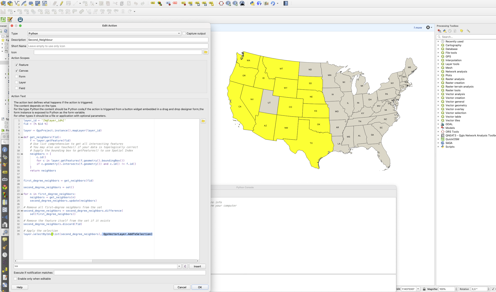

Überblick
Benutzerdefinierte QGIS-Actions für interaktive Nachbarsuchen direkt aus dem Kartenfenster. Ein Klick auf ein Feature löst eine Python-Action aus, die alle angrenzenden Features findet und hervorhebt — schnelle räumliche Beziehungserkundung ohne separate Analysewerkzeuge.
Methodik
Action-Konfiguration
Konfiguration von QGIS-Layer-Actions über den Python-Action-Typ zum Abfangen von Feature-Klicks im Kartenfenster.
Nachbar-Abfragelogik
Schreiben von Python-Ausdrücken innerhalb der Action zur Abfrage räumlich benachbarter Features über QGISs räumliche Prädikate (touches, intersects) und Hervorhebung der Ergebnisse im Kartenfenster.
Attributanzeige
Konfiguration der Action zur Öffnung eines Zusammenfassungs-Panels mit Nachbar-Attributen für eine schnelle Inspektion.
Tools & Technologien
- QGIS-Layer-Actions-Framework
- PyQGIS für räumliche Abfragelogik
- QGIS-Ausdrucks-Engine
Ergebnis
Erstellung einer wiederverwendbaren QGIS-Action für interaktive Nachbarsuchen ohne zusätzliche Werkzeuge — demonstriert fortgeschrittene QGIS-Anpassungs- und PyQGIS-Scripting-Fähigkeiten.